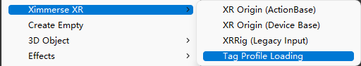
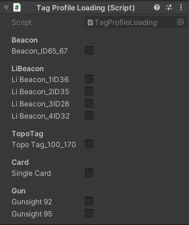
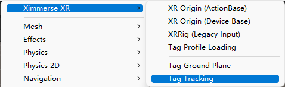
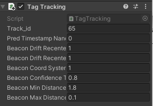
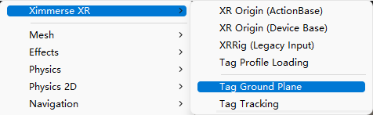
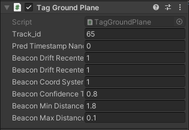

如何使用Tag跟踪
本教程将顺序完成如下内容：
准备工作
导入并编译Beacon演示Demo
体验第一个具有Tag跟踪的APK
介绍Tag的使用
自定义扩展
1 准备工作
开始使用Tag跟踪功能前，需要如下软件或设备：
Visual Studio 2019
安装了Unity并添加了 Android Platform Build Support 模块的 Unity Hub
Android SDK （API26及以上）
RhinoX Pro设备
一根Type-C数据线
一台开发电脑
一个Beacon
2 导入并编译Beacon演示Demo
Note
环境配置以及SDK的导入可参考第三章入门指南
导入SDK后，点击Import导入示例场景
打开名为“HelloUnity”的场景，并将其编译成APK。
3 体验第一个具有Tag跟踪的APK
拿出Beacon并将其放置于地面合适的位置，该Beacon放置的位置将作为Demo中的世界中心。
佩戴头显并运行APK，注视Beacon使Camera识别并设置世界原点。
Note
世界原点将会跟随Beacon的运动而发生平移和旋转，并同时更新此时头部位置坐标，即更新您看到场景的视角。
4 介绍Tag的使用
Tag Profile Loading
Tag Profile Loading 创建方式：Hierarchy面板单击鼠标右键，点击Ximmerse XR -> Tag Profile Loading。
Tag loading使用方式：Inspector面板勾选场景中使用的Tag跟踪ID。
Note
使用Tag Tracking与Tag Ground Plane均需要在场景中创建并设置Tag Profile Loading。
Tag Tracking
Tag Tracking 添加方式：选中场景中需要跟踪的标识物挂载脚本，点击菜单栏Component -> Ximmerse XR -> Tag Tracking。
Inspector面板输入对应Beacon的ID即可。
Tag Ground Plane
Tag Ground Plane 添加方式：选中场景中需要跟踪的标识物挂载脚本，点击菜单栏Component -> Ximmerse XR -> Tag Ground Plane。
Inspector面板输入对应Beacon的ID即可。
